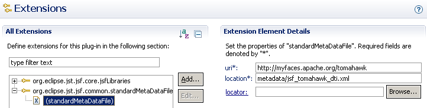

Providing Design-Time Tag Metadata
Overview
This document provides an overview of what is required to provide "design-time"
("DT") metadata for JSP tags. DT metadata is consumed by the DT tag conversion / decoration
framework to produce close-to-runtime visuals in the Web Page Editor.
This note assumes the following user knowledge:
- How to create plugin projects
- How to declare dependencies in plugin projects
- How to use extension points
- How to package and deploy plugins
Setup Steps
The following setup steps are described in more details in the sections that follow:
- Create a Plug-in Project
- Specify plug-in's dependencies
- Configure "standardMetaDataFiles" extension point
- Create DT metadata XML file
Create a Plug-in Project
A plug-in project is required to use the "standardMetaDataFiles" extension point and to contain the DT metadata file.
- Select menu items, "File" > "New" > "Project..."
- Select "Plug-in Project" and click "Next >"
- Provide a reasonable value for "Project name" and click "Next >"
- Provide reasonable values for "Plug-in Properties"
- Uncheck "This plug-in will make contributions to the UI"
- Click "Finish"
Specify Plug-in's Dependencies
- Open the new project's "META-INF/MANIFEST.MF" file in the "Plug-in Manifest Editor"
- Select the "Dependencies" tab
- Add "org.eclipse.jst.jsf.common" under "Required Plug-ins"
Configure "standardMetaDataFiles" Extension Point
- Open the new project's "META-INF/MANIFEST.MF" file in the "Plug-in Manifest Editor"
- Select the "Extensions" tab
- Add "org.eclipse.jst.jsf.common.standardMetaDataFiles" under "All Extensions"
- Right-click the new extension and select "New" > "standardMetaDataFile"
- Select "(standardMetaDataFile)"
- Under "Extension Element Details", set appropriate values:
- For "uri", value should match the URI value as set in the tag library
- The "location" value is a plugin-relative path and filename (file has not been created yet - value entered will be required in subsequent steps)
- No value is required for "locator" (leave blank)

Create DT Metadata XML File
- Create necessary folder(s) and file, to match value specified for "location" of the "standardMetaDataFile" (e.g. "metadata/jsf_tomahawk_dti.xml")
Writing the DT Metadata
Document Node
Copy the following XML into the DT metadata file as a starting point:
<?xml version="1.0" encoding="UTF-8"?>
<md:metadatamodel xmlns:xsi="http://www.w3.org/2001/XMLSchema-instance"
xmlns:ecore="http://www.eclipse.org/emf/2002/Ecore"
xmlns:md="http://org.eclipse.jst.jsf.common.metadata/metadata.ecore"
xmlns:dti="http://org.eclipse.jsf.pagedesigner/dtinfo.ecore"
id="http://myfaces.apache.org/tomahawk"
type="tagFile">
</md:metadatamodel>
Note that the "id" attribute of the document node matches the "uri" as specified previously in the plug-in manifest.
Entity (Tag) Node
Insert the following XML inside the previously created document node:
<entity id="inputText" type="tag">
<trait id="dt-info">
<value xsi:type="dti:DTInfo">
<tag-convert-info>
<operation id="CreateElementOperation">
<parameter value="input"/>
</operation>
<operation id="CopyAllAttributesOperation"/>
<operation id="RenameAttributeOperation">
<parameter value="styleClass"/>
<parameter value="class"/>
</operation>
<operation id="CreateAttributeOperation">
<parameter value="type"/>
<parameter value="text"/>
</operation>
</tag-convert-info>
<tag-decorate-info id="vpd-decorate-design"
multiLevel="true"
widget="true"
setNonVisualChildElements="true"
/>
<tag-decorate-info id="vpd-decorate-preview">
<resolve-attribute-value attributeName="value"/>
</tag-decorate-info>
</value>
</trait>
</entity>
Note the following:
- The "entity" node's "id" attribute specifies the name of the tag for which metadata is being provided (in this example, "inputText")
- The "entity" node must have a "type" attribute with the value "tag"
- The "trait" node must have an "id" attribute with the value "dt-info"
- The "value" node must have an "xsi:type" attribute with the value "dti:DTInfo"
- A single DT metadata file will typically contain one "entity" node per tag for which metadata is being provided - generally there will be one such file per tag library
Child Nodes
The child nodes specify the tag conversion and decoration operations that will
be performed to translate the source JSP node into HTML that is rendered in the
Web Page Editor. Full discussion of the operations available is outside the
scope of this document. The listings above serve to demonstrate the form of the
metadata.
(Suggested study materials for interested readers are the metadata files
located in the "org.eclipse.jst.pagedesigner.jsf.ui" plug-in, which provide the
metadata for JSF core and JSF HTML tag libraries.)
References